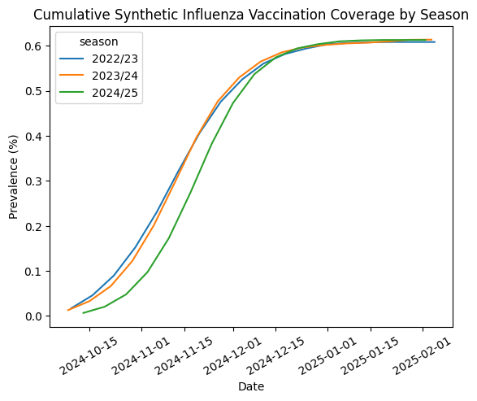
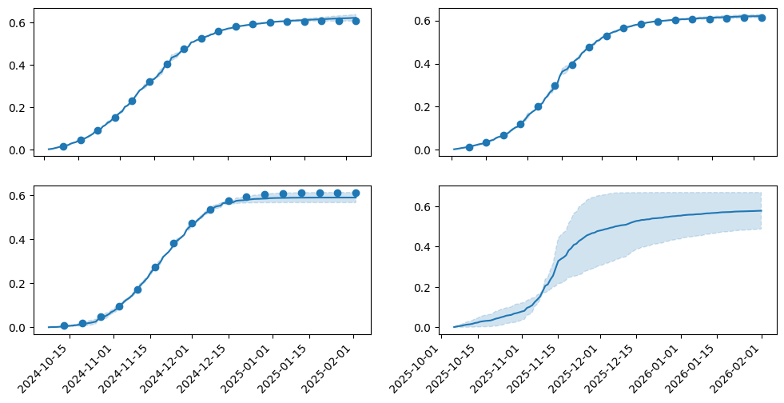
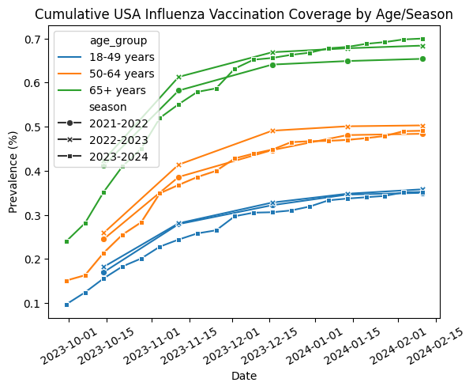
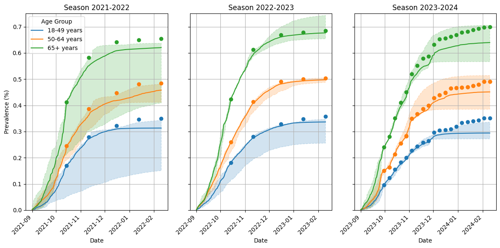

IDD Demo¶
from datetime import date
from itertools import product
import matplotlib.pyplot as plt
import numpy as np
import pandas as pd
import seaborn as sns
from scipy.special import logit
from vaxflux.covariates import CovariateCategories, GaussianCovariate, PooledCovariate
from vaxflux.curves import LogisticCurve
from vaxflux.data import (
get_ncird_weekly_cumulative_vaccination_coverage,
sample_dataset,
)
from vaxflux.dates import SeasonRange, daily_date_ranges
from vaxflux.uptake import SeasonalUptakeModel
Simple Demo With Synthetic Data¶
('m', 'r', 's')
seasons = [
SeasonRange(season="2022/23", start_date="2022-10-03", end_date="2023-02-05"),
SeasonRange(season="2023/24", start_date="2023-10-02", end_date="2024-02-04"),
SeasonRange(season="2024/25", start_date="2024-10-07", end_date="2025-02-02"),
SeasonRange(season="2025/26", start_date="2025-10-06", end_date="2026-02-01"),
]
dates = daily_date_ranges(seasons, range_days=6)
parameters = [
("m", "2022/23", 0.50),
("r", "2022/23", -2.50),
("s", "2022/23", 40.00),
("m", "2023/24", 0.51),
("r", "2023/24", -2.40),
("s", "2023/24", 42.00),
("m", "2024/25", 0.52),
("r", "2024/25", -2.30),
("s", "2024/25", 44.00),
]
sample_observations = sample_dataset(
logistic_curve,
seasons[:-1],
[d for d in dates if d.season != "2025/26"],
[],
parameters,
0.0005,
random_seed=123,
)
sample_observations.head(n=10)
| season | season_start_date | season_end_date | start_date | end_date | report_date | type | value | |
|---|---|---|---|---|---|---|---|---|
| 0 | 2022/23 | 2022-10-03 | 2023-02-05 | 2022-10-03 | 2022-10-09 | 2022-10-09 | incidence | 0.017104 |
| 1 | 2022/23 | 2022-10-03 | 2023-02-05 | 2022-10-10 | 2022-10-16 | 2022-10-16 | incidence | 0.028909 |
| 2 | 2022/23 | 2022-10-03 | 2023-02-05 | 2022-10-17 | 2022-10-23 | 2022-10-23 | incidence | 0.043948 |
| 3 | 2022/23 | 2022-10-03 | 2023-02-05 | 2022-10-24 | 2022-10-30 | 2022-10-30 | incidence | 0.062417 |
| 4 | 2022/23 | 2022-10-03 | 2023-02-05 | 2022-10-31 | 2022-11-06 | 2022-11-06 | incidence | 0.077870 |
| 5 | 2022/23 | 2022-10-03 | 2023-02-05 | 2022-11-07 | 2022-11-13 | 2022-11-13 | incidence | 0.090025 |
| 6 | 2022/23 | 2022-10-03 | 2023-02-05 | 2022-11-14 | 2022-11-20 | 2022-11-20 | incidence | 0.085255 |
| 7 | 2022/23 | 2022-10-03 | 2023-02-05 | 2022-11-21 | 2022-11-27 | 2022-11-27 | incidence | 0.070154 |
| 8 | 2022/23 | 2022-10-03 | 2023-02-05 | 2022-11-28 | 2022-12-04 | 2022-12-04 | incidence | 0.049434 |
| 9 | 2022/23 | 2022-10-03 | 2023-02-05 | 2022-12-05 | 2022-12-11 | 2022-12-11 | incidence | 0.035302 |
plot_observations = (
sample_observations[["season", "end_date", "value"]]
.rename(columns={"value": "incidence"})
.sort_values(["season", "end_date"])
.reset_index(drop=True)
)
plot_observations_recombine = []
for season, season_observations in plot_observations.groupby("season"):
if year_shift := {"2022/23": 2, "2023/24": 1}.get(season):
season_observations["end_date"] = season_observations[
"end_date"
] + pd.DateOffset(years=year_shift)
season_observations["prevalence"] = season_observations["incidence"].cumsum()
plot_observations_recombine.append(season_observations)
plot_observations = pd.concat(plot_observations_recombine, ignore_index=True)
plot_observations.head(n=10)
| season | end_date | incidence | prevalence | |
|---|---|---|---|---|
| 0 | 2022/23 | 2024-10-09 | 0.017104 | 0.017104 |
| 1 | 2022/23 | 2024-10-16 | 0.028909 | 0.046012 |
| 2 | 2022/23 | 2024-10-23 | 0.043948 | 0.089960 |
| 3 | 2022/23 | 2024-10-30 | 0.062417 | 0.152376 |
| 4 | 2022/23 | 2024-11-06 | 0.077870 | 0.230247 |
| 5 | 2022/23 | 2024-11-13 | 0.090025 | 0.320272 |
| 6 | 2022/23 | 2024-11-20 | 0.085255 | 0.405527 |
| 7 | 2022/23 | 2024-11-27 | 0.070154 | 0.475682 |
| 8 | 2022/23 | 2024-12-04 | 0.049434 | 0.525115 |
| 9 | 2022/23 | 2024-12-11 | 0.035302 | 0.560417 |
sns.lineplot(
data=plot_observations,
x="end_date",
y="prevalence",
hue="season",
)
plt.xlabel("Date")
plt.ylabel("Prevalence (%)")
plt.title("Cumulative Synthetic Influenza Vaccination Coverage by Season")
plt.xticks(rotation=30)
plt.show()

covariates = [
PooledCovariate(
parameter="m",
covariate=None,
distribution="Normal",
distribution_kwargs={
"mu": 0.5,
"sigma": 0.15,
},
),
PooledCovariate(
parameter="r",
covariate=None,
distribution="Normal",
distribution_kwargs={
"mu": -2.5,
"sigma": 0.15,
},
),
PooledCovariate(
parameter="s",
covariate=None,
distribution="Normal",
distribution_kwargs={
"mu": 40.0,
"sigma": 5.0,
},
),
]
covariates
[PooledCovariate(parameter='m', covariate=None, distribution='Normal', distribution_kwargs={'mu': 0.5, 'sigma': 0.15}),
PooledCovariate(parameter='r', covariate=None, distribution='Normal', distribution_kwargs={'mu': -2.5, 'sigma': 0.15}),
PooledCovariate(parameter='s', covariate=None, distribution='Normal', distribution_kwargs={'mu': 40.0, 'sigma': 5.0})]
model = SeasonalUptakeModel(
logistic_curve,
covariates,
observations=sample_observations,
season_ranges=seasons,
date_ranges=dates,
pooled_epsilon=True,
epsilon=0.001,
)
model.build()
<vaxflux.uptake.SeasonalUptakeModel at 0x33d6611d0>
Running window adaptation
100.00% [4000/4000 00:00<?]
100.00% [4000/4000 00:00<?]
100.00% [1000/1000 00:00<?]
100.00% [1000/1000 00:00<?]
There were 6 divergences after tuning. Increase `target_accept` or reparameterize.
We recommend running at least 4 chains for robust computation of convergence diagnostics
The rhat statistic is larger than 1.01 for some parameters. This indicates problems during sampling. See https://arxiv.org/abs/1903.08008 for details
The effective sample size per chain is smaller than 100 for some parameters. A higher number is needed for reliable rhat and ess computation. See https://arxiv.org/abs/1903.08008 for details
<vaxflux.uptake.SeasonalUptakeModel at 0x33d6611d0>
<class 'pandas.core.frame.DataFrame'>
Index: 980000 entries, 0 to 237999
Data columns (total 6 columns):
# Column Non-Null Count Dtype
--- ------ -------------- -----
0 draw 980000 non-null int64
1 chain 980000 non-null int64
2 season 980000 non-null string
3 date 980000 non-null datetime64[ns]
4 type 980000 non-null string
5 value 980000 non-null float64
dtypes: datetime64[ns](1), float64(1), int64(2), string(2)
memory usage: 52.3 MB
posterior = (
posterior[["draw", "chain", "season", "date", "value"]]
.rename(columns={"value": "incidence"})
.sort_values(["draw", "chain", "season", "date"])
.reset_index(drop=True)
)
posterior["prevalence"] = posterior.groupby(["draw", "chain", "season"])[
"incidence"
].cumsum()
posterior.head(n=10)
| draw | chain | season | date | incidence | prevalence | |
|---|---|---|---|---|---|---|
| 0 | 0 | 0 | 2022/23 | 2022-10-03 | 0.002515 | 0.002515 |
| 1 | 0 | 0 | 2022/23 | 2022-10-04 | 0.001339 | 0.003855 |
| 2 | 0 | 0 | 2022/23 | 2022-10-05 | 0.002386 | 0.006241 |
| 3 | 0 | 0 | 2022/23 | 2022-10-06 | 0.002393 | 0.008634 |
| 4 | 0 | 0 | 2022/23 | 2022-10-07 | 0.002457 | 0.011091 |
| 5 | 0 | 0 | 2022/23 | 2022-10-08 | 0.002152 | 0.013243 |
| 6 | 0 | 0 | 2022/23 | 2022-10-09 | 0.002414 | 0.015657 |
| 7 | 0 | 0 | 2022/23 | 2022-10-10 | 0.003818 | 0.019475 |
| 8 | 0 | 0 | 2022/23 | 2022-10-11 | 0.003346 | 0.022821 |
| 9 | 0 | 0 | 2022/23 | 2022-10-12 | 0.006830 | 0.029652 |
posterior_summary = (
posterior[["season", "date", "prevalence"]]
.groupby(["season", "date"])
.agg([lambda x: np.quantile(x, 0.005), "median", lambda x: np.quantile(x, 0.995)])
.reset_index()
)
posterior_summary.columns = ["season", "date", "lower", "median", "upper"]
posterior_summary.head(n=10)
| season | date | lower | median | upper | |
|---|---|---|---|---|---|
| 0 | 2022/23 | 2022-10-03 | 0.001334 | 0.001925 | 0.002515 |
| 1 | 2022/23 | 2022-10-04 | 0.002341 | 0.003098 | 0.003855 |
| 2 | 2022/23 | 2022-10-05 | 0.004629 | 0.005436 | 0.006241 |
| 3 | 2022/23 | 2022-10-06 | 0.008176 | 0.008406 | 0.008634 |
| 4 | 2022/23 | 2022-10-07 | 0.011091 | 0.011340 | 0.011590 |
| 5 | 2022/23 | 2022-10-08 | 0.013243 | 0.014364 | 0.015486 |
| 6 | 2022/23 | 2022-10-09 | 0.015657 | 0.016381 | 0.017104 |
| 7 | 2022/23 | 2022-10-10 | 0.018971 | 0.019223 | 0.019476 |
| 8 | 2022/23 | 2022-10-11 | 0.021063 | 0.021943 | 0.022822 |
| 9 | 2022/23 | 2022-10-12 | 0.026643 | 0.028148 | 0.029652 |
fig, ((ax1, ax2), (ax3, ax4)) = plt.subplots(figsize=(12, 6), ncols=2, nrows=2)
season_to_ax_map = {
"2022/23": ax1,
"2023/24": ax2,
"2024/25": ax3,
"2025/26": ax4,
}
for season in ("2022/23", "2023/24", "2024/25", "2025/26"):
ax = season_to_ax_map[season]
season_summary = posterior_summary[posterior_summary["season"] == season]
season_observations = plot_observations[plot_observations["season"] == season]
if len(season_observations):
ax.plot(
season_observations["end_date"]
+ pd.DateOffset(years={"2022/23": -2, "2023/24": -1}.get(season, 0)),
season_observations["prevalence"],
marker="o",
linestyle="",
label="observed",
color="tab:blue",
)
ax.plot(
season_summary["date"],
season_summary["median"],
color="tab:blue",
linestyle="-",
)
ax.fill_between(
season_summary["date"],
season_summary["lower"],
season_summary["upper"],
alpha=0.2,
linestyle="--",
color="tab:blue",
)
fig.autofmt_xdate(rotation=45)
plt.show()

Example Incorporating Age Levels¶
The data used in this example comes from the CDC NCIRD's National Immunization Survey, which can be obtained here.
| geographic_level | geographic_name | demographic_level | demographic_name | indicator_label | indicator_category_label | month_week | nd_weekly_estimate | ci_half_width_95pct | n_unweighted | ... | influenza_season | legend | indicator_category_label_sort | demographic_level_sort | demographic_name_sort | geographic_sort | season_sort | legend_sort | 95_ci_lower | 95_ci_upper | |
|---|---|---|---|---|---|---|---|---|---|---|---|---|---|---|---|---|---|---|---|---|---|
| 0 | State | Arizona | Overall | 18+ years | 4-level vaccination and intent | Definitely or probably will not get a vaccine | January Week 4 | 30.8 | 7.8784 | 159 | ... | 2023-2024 | 2023-2024, Arizona, Overall (18+ years) | 4 | 1 | 1 | 14 | 3 | 3140101 | 22.9 | 38.7 |
| 1 | State | Arizona | Overall | 18+ years | 4-level vaccination and intent | Definitely will get a vaccine | January Week 4 | 6.8 | 4.1669 | 159 | ... | 2023-2024 | 2023-2024, Arizona, Overall (18+ years) | 2 | 1 | 1 | 14 | 3 | 3140101 | 2.6 | 11.0 |
| 2 | State | Arizona | Overall | 18+ years | 4-level vaccination and intent | Probably will get a vaccine or are unsure | January Week 4 | 22.3 | 7.6134 | 159 | ... | 2023-2024 | 2023-2024, Arizona, Overall (18+ years) | 3 | 1 | 1 | 14 | 3 | 3140101 | 14.7 | 29.9 |
| 3 | State | Arizona | Overall | 18+ years | 4-level vaccination and intent | Received a vaccination | January Week 4 | 40.1 | 1.8745 | 8592 | ... | 2023-2024 | 2023-2024, Arizona, Overall (18+ years) | 1 | 1 | 1 | 14 | 3 | 3140101 | 38.2 | 41.9 |
| 4 | State | Arizona | Overall | 18+ years | Up-to-date | Yes | January Week 4 | 40.1 | 1.8745 | 8592 | ... | 2023-2024 | 2023-2024, Arizona, Overall (18+ years) | <NA> | 1 | 1 | 14 | 3 | 3140101 | 38.2 | 41.9 |
| ... | ... | ... | ... | ... | ... | ... | ... | ... | ... | ... | ... | ... | ... | ... | ... | ... | ... | ... | ... | ... | ... |
| 17528 | National | National | Age | 50-64 years | 4-level vaccination and intent | Probably will get a vaccine or are unsure | March Week 5 | 10.3908 | 3.4865 | 3162 | ... | 2023-2024 | 2023-2024, National, Age (6 Level): 50-64 years | 3 | 4 | 6 | 1 | 3 | 3010406 | 6.9 | 13.9 |
| 17529 | National | National | Age | 50-64 years | 4-level vaccination and intent | Received a vaccination | March Week 5 | 50.2802 | 1.0457 | 112370 | ... | 2023-2024 | 2023-2024, National, Age (6 Level): 50-64 years | 1 | 4 | 6 | 1 | 3 | 3010406 | 49.2 | 51.3 |
| 17530 | National | National | Age | 50-64 years | Up-to-date | Yes | March Week 5 | 50.2802 | 1.0457 | 112370 | ... | 2023-2024 | 2023-2024, National, Age (6 Level): 50-64 years | <NA> | 4 | 6 | 1 | 3 | 3010406 | 49.2 | 51.3 |
| 17531 | National | National | Age | 50-64 years | Up-to-date | Yes | April Week 3 | 50.9854 | 1.106 | 112370 | ... | 2023-2024 | 2023-2024, National, Age (6 Level): 50-64 years | <NA> | 4 | 6 | 1 | 3 | 3010406 | 49.9 | 52.1 |
| 17532 | National | National | Age | 50-64 years | Up-to-date | Yes | April Week 4 | 51.0774 | 1.1206 | 112370 | ... | 2023-2024 | 2023-2024, National, Age (6 Level): 50-64 years | <NA> | 4 | 6 | 1 | 3 | 3010406 | 50.0 | 52.2 |
17533 rows × 22 columns
usa_coverage = (
weekly_coverage[
(weekly_coverage["geographic_level"] == "National")
& (weekly_coverage["indicator_label"] == "Up-to-date")
& (weekly_coverage["indicator_category_label"] == "Yes")
& (weekly_coverage["demographic_level"] == "Age")
& (
weekly_coverage["demographic_name"].isin(
["18-49 years", "50-64 years", "65+ years"]
)
)
][
[
"influenza_season",
"current_season_week_ending",
"demographic_name",
"nd_weekly_estimate",
]
]
.rename(
columns={
"influenza_season": "season",
"current_season_week_ending": "end_date",
"demographic_name": "age_group",
"nd_weekly_estimate": "prevalence",
}
)
.sort_values(["season", "age_group", "end_date"])
.reset_index(drop=True)
.drop_duplicates()
)
usa_coverage = usa_coverage[
(usa_coverage["end_date"].dt.month < 2)
| (usa_coverage["end_date"].dt.month > 7)
| (
(usa_coverage["end_date"].dt.month == 2)
& (usa_coverage["end_date"].dt.day < 11)
)
]
usa_coverage["end_date"] = usa_coverage["end_date"].dt.normalize()
usa_coverage["plot_end_date"] = usa_coverage["end_date"].copy()
usa_coverage_recombine = []
for (season, _), season_age_coverage in usa_coverage.groupby(["season", "age_group"]):
if year_shift := {"2021-2022": -2, "2022-2023": -1}.get(season):
season_age_coverage["end_date"] = season_age_coverage[
"end_date"
] + pd.DateOffset(years=year_shift)
fill_value = pd.Timestamp(
year=season_age_coverage["end_date"].min().year, month=9, day=1
)
season_age_coverage["start_date"] = season_age_coverage["end_date"].shift(
1, fill_value=fill_value
)
season_age_coverage["prevalence"] = season_age_coverage["prevalence"].cummax()
season_age_coverage["incidence"] = season_age_coverage[
"prevalence"
] - season_age_coverage["prevalence"].shift(1, fill_value=0)
usa_coverage_recombine.append(season_age_coverage)
usa_coverage = pd.concat(usa_coverage_recombine, ignore_index=True)
usa_coverage = usa_coverage[
[
"season",
"start_date",
"end_date",
"age_group",
"prevalence",
"incidence",
"plot_end_date",
]
]
usa_coverage["prevalence"] = 0.01 * usa_coverage["prevalence"]
usa_coverage["incidence"] = 0.01 * usa_coverage["incidence"]
| season | start_date | end_date | age_group | prevalence | incidence | plot_end_date | |
|---|---|---|---|---|---|---|---|
| 0 | 2021-2022 | 2021-09-01 | 2021-10-14 | 18-49 years | 0.17 | 0.17 | 2023-10-14 |
| 1 | 2021-2022 | 2021-10-14 | 2021-11-11 | 18-49 years | 0.279 | 0.109 | 2023-11-11 |
| 2 | 2021-2022 | 2021-11-11 | 2021-12-16 | 18-49 years | 0.322 | 0.043 | 2023-12-16 |
| 3 | 2021-2022 | 2021-12-16 | 2022-01-13 | 18-49 years | 0.346 | 0.024 | 2024-01-13 |
| 4 | 2021-2022 | 2022-01-13 | 2022-02-10 | 18-49 years | 0.35 | 0.004 | 2024-02-10 |
| ... | ... | ... | ... | ... | ... | ... | ... |
| 105 | 2023-2024 | 2024-01-06 | 2024-01-13 | 65+ years | 0.681 | 0.003 | 2024-01-13 |
| 106 | 2023-2024 | 2024-01-13 | 2024-01-20 | 65+ years | 0.688 | 0.007 | 2024-01-20 |
| 107 | 2023-2024 | 2024-01-20 | 2024-01-27 | 65+ years | 0.692 | 0.004 | 2024-01-27 |
| 108 | 2023-2024 | 2024-01-27 | 2024-02-03 | 65+ years | 0.698 | 0.006 | 2024-02-03 |
| 109 | 2023-2024 | 2024-02-03 | 2024-02-10 | 65+ years | 0.7 | 0.002 | 2024-02-10 |
110 rows × 7 columns
sns.lineplot(
data=usa_coverage,
x="plot_end_date",
y="prevalence",
hue="age_group",
style="season",
markers=True,
dashes=False,
)
plt.xlabel("Date")
plt.ylabel("Prevalence (%)")
plt.title("Cumulative USA Influenza Vaccination Coverage by Age/Season")
plt.xticks(rotation=30)
plt.show()

seasons = [
SeasonRange(
season="2021-2022", start_date=date(2021, 9, 1), end_date=date(2022, 2, 10)
),
SeasonRange(
season="2022-2023", start_date=date(2022, 9, 1), end_date=date(2023, 2, 10)
),
SeasonRange(
season="2023-2024", start_date=date(2023, 9, 1), end_date=date(2024, 2, 10)
),
]
seasons
[SeasonRange(season='2021-2022', start_date=datetime.date(2021, 9, 1), end_date=datetime.date(2022, 2, 10)),
SeasonRange(season='2022-2023', start_date=datetime.date(2022, 9, 1), end_date=datetime.date(2023, 2, 10)),
SeasonRange(season='2023-2024', start_date=datetime.date(2023, 9, 1), end_date=datetime.date(2024, 2, 10))]
age_covariate = CovariateCategories(
covariate="age_group", categories=("18-49 years", "50-64 years", "65+ years")
)
age_covariate
CovariateCategories(covariate='age_group', categories=('18-49 years', '50-64 years', '65+ years'))
covariates = [
# Seasonal effects
PooledCovariate(
parameter="m",
covariate=None,
distribution="Normal",
distribution_kwargs={
"mu": logit(0.35),
"sigma": 0.35,
},
),
PooledCovariate(
parameter="r",
covariate=None,
distribution="Normal",
distribution_kwargs={
"mu": -3.0,
"sigma": 0.5,
},
),
PooledCovariate(
parameter="s",
covariate=None,
distribution="Normal",
distribution_kwargs={
"mu": 45.0,
"sigma": 10.0,
},
),
# Age specific effect
GaussianCovariate(
parameter="m",
covariate="age_group",
mu=[logit(0.5) - logit(0.3), logit(0.7) - logit(0.3)],
sigma=2 * [0.2],
),
GaussianCovariate(
parameter="s",
covariate="age_group",
mu=2 * [0.0],
sigma=2 * [2.5],
),
]
covariates
[PooledCovariate(parameter='m', covariate=None, distribution='Normal', distribution_kwargs={'mu': -0.6190392084062235, 'sigma': 0.35}),
PooledCovariate(parameter='r', covariate=None, distribution='Normal', distribution_kwargs={'mu': -3.0, 'sigma': 0.5}),
PooledCovariate(parameter='s', covariate=None, distribution='Normal', distribution_kwargs={'mu': 45.0, 'sigma': 10.0}),
GaussianCovariate(parameter='m', covariate='age_group', mu=[0.8472978603872037, 1.6945957207744071], sigma=[0.2, 0.2], eta=1.0),
GaussianCovariate(parameter='s', covariate='age_group', mu=[0.0, 0.0], sigma=[2.5, 2.5], eta=1.0)]
observations = usa_coverage[
["season", "start_date", "end_date", "age_group", "incidence"]
].rename(columns={"incidence": "value"})
observations["type"] = "incidence"
observations = observations[
["season", "start_date", "end_date", "age_group", "type", "value"]
]
observations
| season | start_date | end_date | age_group | type | value | |
|---|---|---|---|---|---|---|
| 0 | 2021-2022 | 2021-09-01 | 2021-10-14 | 18-49 years | incidence | 0.17 |
| 1 | 2021-2022 | 2021-10-14 | 2021-11-11 | 18-49 years | incidence | 0.109 |
| 2 | 2021-2022 | 2021-11-11 | 2021-12-16 | 18-49 years | incidence | 0.043 |
| 3 | 2021-2022 | 2021-12-16 | 2022-01-13 | 18-49 years | incidence | 0.024 |
| 4 | 2021-2022 | 2022-01-13 | 2022-02-10 | 18-49 years | incidence | 0.004 |
| ... | ... | ... | ... | ... | ... | ... |
| 105 | 2023-2024 | 2024-01-06 | 2024-01-13 | 65+ years | incidence | 0.003 |
| 106 | 2023-2024 | 2024-01-13 | 2024-01-20 | 65+ years | incidence | 0.007 |
| 107 | 2023-2024 | 2024-01-20 | 2024-01-27 | 65+ years | incidence | 0.004 |
| 108 | 2023-2024 | 2024-01-27 | 2024-02-03 | 65+ years | incidence | 0.006 |
| 109 | 2023-2024 | 2024-02-03 | 2024-02-10 | 65+ years | incidence | 0.002 |
110 rows × 6 columns
model = SeasonalUptakeModel(
logistic_curve,
covariates,
observations=observations,
covariate_categories=[age_covariate],
season_ranges=seasons,
)
model.build()
<vaxflux.uptake.SeasonalUptakeModel at 0x3d730a390>
Running window adaptation
100.00% [6000/6000 00:00<?]
100.00% [6000/6000 00:00<?]
100.00% [6000/6000 00:00<?]
100.00% [6000/6000 00:00<?]
100.00% [1000/1000 00:00<?]
100.00% [1000/1000 00:00<?]
100.00% [1000/1000 00:00<?]
100.00% [1000/1000 00:00<?]
/Users/twillard/Desktop/GitHub/ACCIDDA/vaxflux/.venv/lib/python3.11/site-packages/arviz/stats/diagnostics.py:596: RuntimeWarning: divide by zero encountered in scalar divide
(between_chain_variance / within_chain_variance + num_samples - 1) / (num_samples)
The rhat statistic is larger than 1.01 for some parameters. This indicates problems during sampling. See https://arxiv.org/abs/1903.08008 for details
The effective sample size per chain is smaller than 100 for some parameters. A higher number is needed for reliable rhat and ess computation. See https://arxiv.org/abs/1903.08008 for details
<vaxflux.uptake.SeasonalUptakeModel at 0x3d730a390>
<class 'pandas.core.frame.DataFrame'>
Index: 5868000 entries, 0 to 651999
Data columns (total 7 columns):
# Column Dtype
--- ------ -----
0 draw int64
1 chain int64
2 season string
3 date datetime64[ns]
4 age_group string
5 type string
6 value float64
dtypes: datetime64[ns](1), float64(1), int64(2), string(3)
memory usage: 358.2 MB
posterior = (
posterior[["draw", "chain", "season", "age_group", "date", "value"]]
.rename(columns={"value": "incidence"})
.sort_values(["draw", "chain", "season", "age_group", "date"])
.reset_index(drop=True)
)
posterior["prevalence"] = posterior.groupby(["draw", "chain", "season", "age_group"])[
"incidence"
].cumsum()
posterior.head(n=10)
| draw | chain | season | age_group | date | incidence | prevalence | |
|---|---|---|---|---|---|---|---|
| 0 | 0 | 0 | 2021-2022 | 18-49 years | 2021-09-01 | 0.000938 | 0.000938 |
| 1 | 0 | 0 | 2021-2022 | 18-49 years | 2021-09-02 | 0.000376 | 0.001314 |
| 2 | 0 | 0 | 2021-2022 | 18-49 years | 2021-09-03 | 0.001366 | 0.002680 |
| 3 | 0 | 0 | 2021-2022 | 18-49 years | 2021-09-04 | 0.000466 | 0.003146 |
| 4 | 0 | 0 | 2021-2022 | 18-49 years | 2021-09-05 | 0.000558 | 0.003704 |
| 5 | 0 | 0 | 2021-2022 | 18-49 years | 2021-09-06 | 0.002340 | 0.006044 |
| 6 | 0 | 0 | 2021-2022 | 18-49 years | 2021-09-07 | 0.000392 | 0.006435 |
| 7 | 0 | 0 | 2021-2022 | 18-49 years | 2021-09-08 | 0.000880 | 0.007315 |
| 8 | 0 | 0 | 2021-2022 | 18-49 years | 2021-09-09 | 0.000664 | 0.007979 |
| 9 | 0 | 0 | 2021-2022 | 18-49 years | 2021-09-10 | 0.001105 | 0.009084 |
posterior_summary = (
posterior[["season", "age_group", "date", "prevalence"]]
.groupby(["season", "age_group", "date"])
.agg([lambda x: np.quantile(x, 0.025), "median", lambda x: np.quantile(x, 0.975)])
.reset_index()
)
posterior_summary.columns = ["season", "age_group", "date", "lower", "median", "upper"]
posterior_summary.head(n=10)
| season | age_group | date | lower | median | upper | |
|---|---|---|---|---|---|---|
| 0 | 2021-2022 | 18-49 years | 2021-09-01 | 0.000315 | 0.000726 | 0.003365 |
| 1 | 2021-2022 | 18-49 years | 2021-09-02 | 0.000557 | 0.001802 | 0.005609 |
| 2 | 2021-2022 | 18-49 years | 2021-09-03 | 0.000668 | 0.003319 | 0.008911 |
| 3 | 2021-2022 | 18-49 years | 2021-09-04 | 0.000981 | 0.004202 | 0.010152 |
| 4 | 2021-2022 | 18-49 years | 2021-09-05 | 0.001666 | 0.005835 | 0.013465 |
| 5 | 2021-2022 | 18-49 years | 2021-09-06 | 0.001934 | 0.008905 | 0.021670 |
| 6 | 2021-2022 | 18-49 years | 2021-09-07 | 0.002127 | 0.010597 | 0.027291 |
| 7 | 2021-2022 | 18-49 years | 2021-09-08 | 0.002891 | 0.011679 | 0.035898 |
| 8 | 2021-2022 | 18-49 years | 2021-09-09 | 0.003343 | 0.012371 | 0.038935 |
| 9 | 2021-2022 | 18-49 years | 2021-09-10 | 0.003581 | 0.013753 | 0.041179 |
fig, axes = plt.subplots(
figsize=(12, 6),
ncols=3,
sharey=True,
)
season_to_ax_map = dict(
zip(("2021-2022", "2022-2023", "2023-2024"), axes, strict=False)
)
age_group_to_color_map = {
"18-49 years": "tab:blue",
"50-64 years": "tab:orange",
"65+ years": "tab:green",
}
for season, age_group in product(
season_to_ax_map.keys(), age_group_to_color_map.keys()
):
ax = season_to_ax_map[season]
color = age_group_to_color_map[age_group]
season_summary = posterior_summary[
(posterior_summary["season"] == season)
& (posterior_summary["age_group"] == age_group)
]
season_observations = usa_coverage[
(usa_coverage["season"] == season) & (usa_coverage["age_group"] == age_group)
]
if len(season_summary):
ax.plot(
season_summary["date"],
season_summary["median"],
color=color,
linestyle="-",
label=age_group,
)
ax.fill_between(
season_summary["date"],
season_summary["lower"],
season_summary["upper"],
alpha=0.2,
linestyle="--",
color=color,
)
if len(season_observations):
ax.plot(
season_observations["end_date"],
season_observations["prevalence"],
marker="o",
linestyle="",
color=color,
)
for season, ax in season_to_ax_map.items():
ax.set_title(f"Season {season}")
ax.set_xlabel("Date")
if season == "2021-2022":
ax.set_ylabel("Prevalence (%)")
ax.legend(title="Age Group", loc="upper left")
ax.grid(visible=True)
ax.set_ylim((0.0, 0.75))
fig.autofmt_xdate(rotation=45)
fig.tight_layout()
plt.show()
